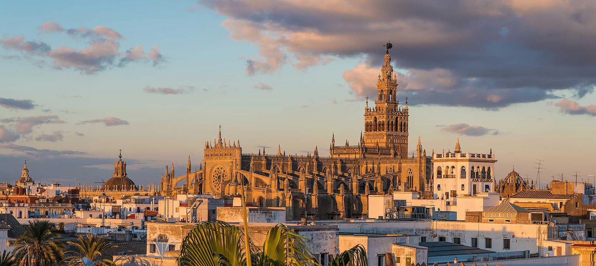
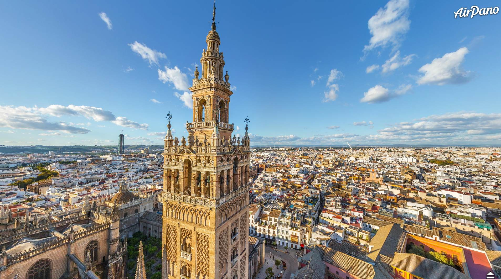
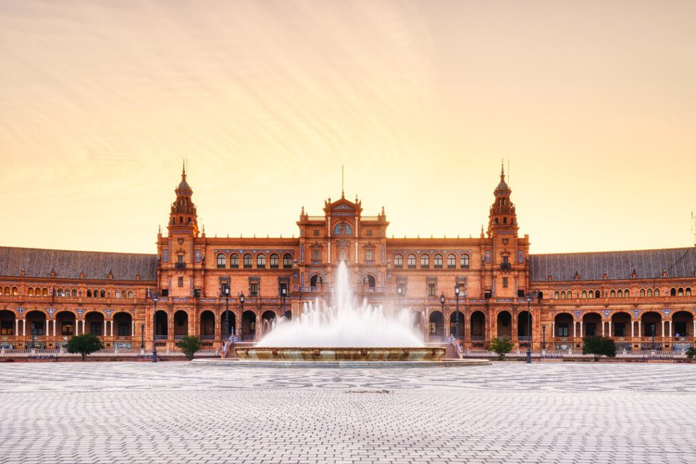
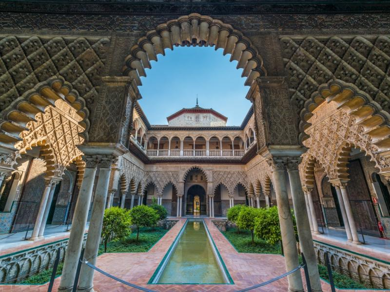
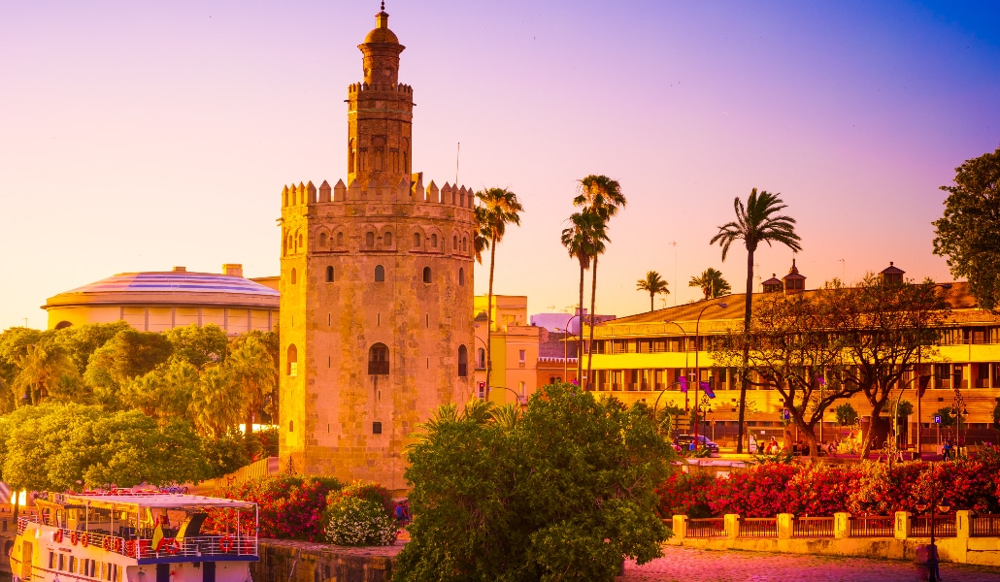
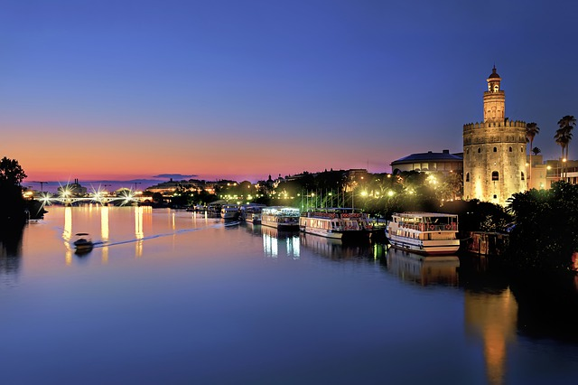
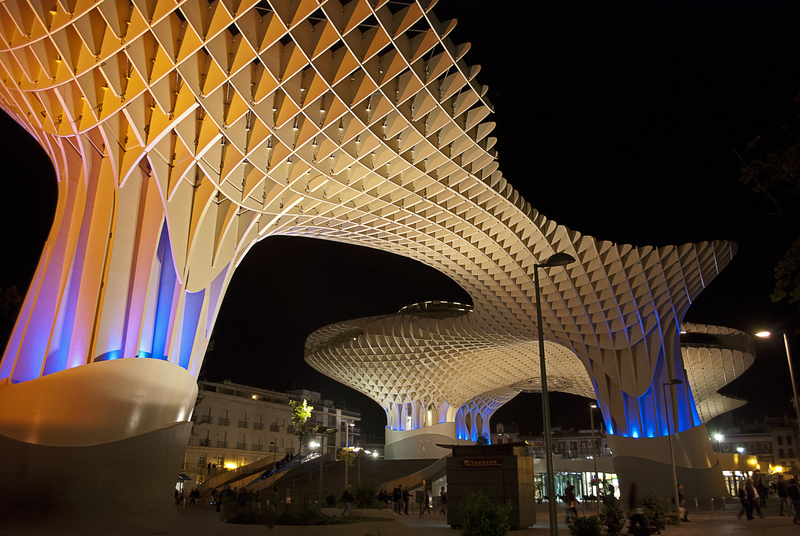
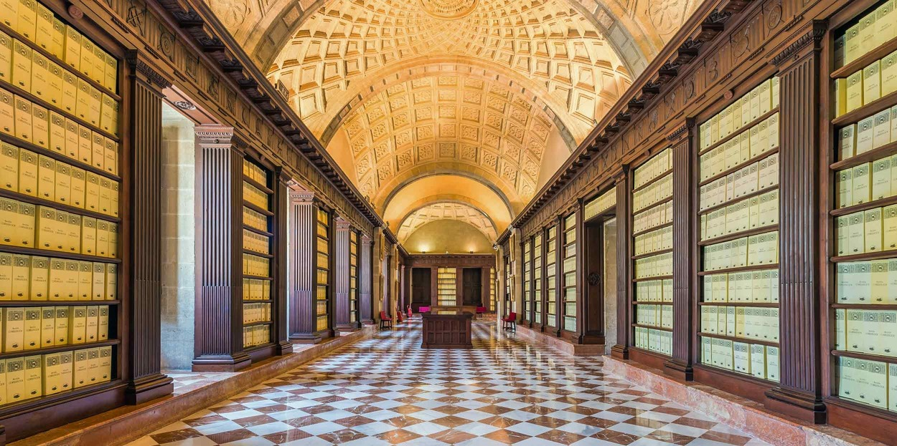
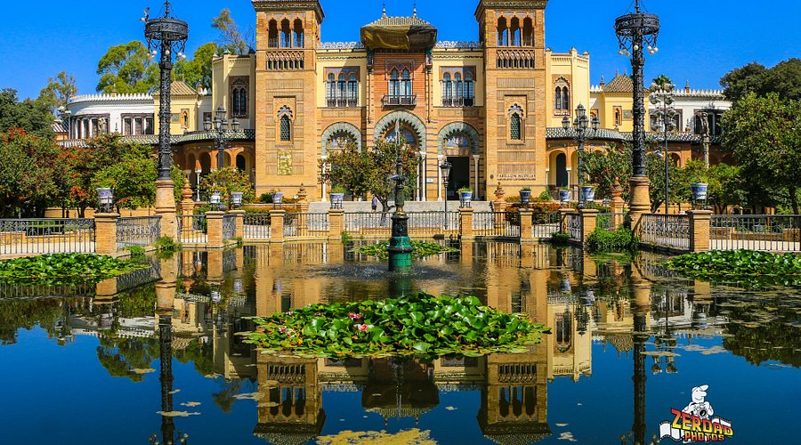

Catedral de Sevilla

Una de las catedrales góticas más grandes del mundo y declarada Patrimonio de la Humanidad por la UNESCO.
Ubicación: Centro histórico







Una de las catedrales góticas más grandes del mundo y declarada Patrimonio de la Humanidad por la UNESCO.
Ubicación: Centro histórico

Estructura moderna de madera que ofrece vistas panorámicas y un espacio cultural innovador.
Ubicación: Plaza de la Encarnación

Edificio histórico que conserva documentos fundamentales sobre la colonización de América.
Ubicación: Avenida de la Constitución

Principal pulmón verde de la ciudad, ideal para pasear y disfrutar del entorno natural.
Ubicación: Zona sur de Sevilla